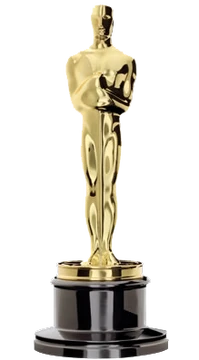

Critica a los oscar
Hollywood se mueve entre la esquizofrenia y la bipolaridad. Mientras que para el recuerdo y la historia la 96ª edición de los premios Oscar será la de la bomba de Oppenheimer; la valentía y lucidez de algunas manifestaciones y gestos individuales que denunciaron la masacre de Gaza, tanto fuera como dentro del templo de la vanidad donde se celebraba la ceremonia, dejaron claro que mucha gente del cine es posible que fabrique sueños, pero es verdad que no vive de espaldas a lo real.
El caso es que, en la misma edición en la que un filme demoledor contra la violencia y la malignidad irresponsable como lo es La zona de interés, de Jonathan Glazer, ganaba el Oscar al mejor filme internacional, la Academia se abrazaba a la legitimación de la guerra (nuclear) justo cuando suenan tambores de armamento contra el eje del mal. En los mismos días en los que la extrema derecha se roza con el poder, triunfa un filme comprensivo y acrítico con lo que significa eliminar al enemigo sin pagar ni culpabilizarse por los daños colaterales. Como es sabido y olvidado, los miles de personas asesinadas en Hiroshima y Nagasaki nunca han recibido disculpas ni sus autores asumieron nunca el debido acto de contrición.
Por lo demás, la 96ª edición del acto más circense del Oscar, siempre pleno de glamur y estilismo, siempre tedioso y anodino, cumplió con su misión. El filme de Nolan, el favorito, hizo buenas las previsiones. El delirio de Lanthimos, Pobres criaturas, demasiado mordaz y estomacalmente complejo de digerir, se conformó con los restos. En la pedrea hubo un poco de todo, incluido el ninguneo total a Martin Scorsese. Se trata de un desprecio-castigo más cruel todavía que el que el Goya dedicó a Víctor Erice. Ya no hay dudas, la industria del cine del mundo contemporáneo no tiene compasión con sus maestros octogenarios. Vivimos en un tiempo que no es para viejos. Saben mucho, consumen poco, y en esta hora de la estulticia el sistema ni admite genialidades ni permite magisterios.
La cuestión es que los premios, y el Oscar lo es, además de justos también deben ser pertinentes. En cuanto premios, no se ganan, se reciben. La creación cultural, a diferencia de la deportiva, carece de goles, metros y cronómetros que establezcan la idoneidad de su triunfo. Por eso mismo, la mayor parte de los premios, cuando tratan de ratificar la valía de una producción artística, rara vez llegan a tiempo. O se dan demasiado pronto y el envanecimiento y la soberbia destruye a quien lo recibe, o tarda tanto que solo hace felices a los herederos del moribundo. Que se lo pregunten a Alfred Hitchcock por ejemplo. Convengamos pues, que lo peor de estos reconocimientos no depende tanto de si se adecúan y hacen justicia a los méritos del premiado, si no si se dan en la hora justa.